img2threejs가 하는 일과 설치
img2threejs는 물건 사진 한 장을 받아 이미지를 분석하고, 그 물건의 3D 형태를 만들어 Three.js에서 돌아가게 해 주는 도구예요. 결과가 웹 코드라서 웹사이트나 앱처럼 웹 기술을 쓰는 곳이면 어디든 상호작용하게 넣을 수 있어요.
아래는 img2threejs 갤러리에 있는 예시예요. 소니 WF-1000XM3 이어폰 케이스를 코드로 다시 만든 모델이에요. 왼쪽 설명 칸 아래 'View generated source' 버튼으로 만들어진 코드를 볼 수 있고, 오른쪽 아래 'drag to orbit · scroll to zoom'처럼 마우스로 돌려 볼 수 있어요.

물건 하나만 되는 것도 아니에요. 아래 화면은 같은 갤러리의 아이소메트릭 집 모형이에요. 주황 지붕 집과 전봇대, 마당까지 한 장면으로 만들어져 있어요.
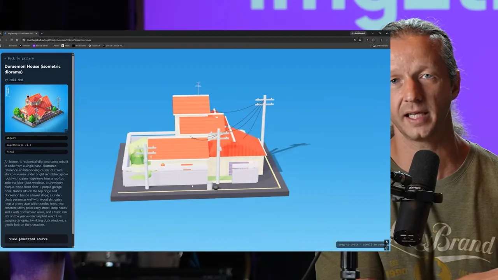
설치는 저장소 주소 하나로
설치는 코딩 에이전트에게 맡겨요. 발표자는 Cursor를 쓴다고 말해요. 아래 입력창처럼 GitHub 링크를 붙이고 "이걸 읽고, 이 프로젝트에 통합하고, 어떻게 시험하는지와 내가 무엇을 주면 되는지 알려 줘"라고만 했어요. 발표자는 이제 Node.js 실행법부터 하나하나 보여 주며 GitHub 프로젝트를 붙이는 시대는 지났다고 해요.

첫 시험: 스튜디오 의자
첫 시험은 단순한 물건이에요. 발표자가 스튜디오에 있는 둥근 바 의자를 휴대폰으로 직접 찍었어요. 아래 사진처럼 바닥과 뒤쪽 배경이 그대로 찍혀 있어요.
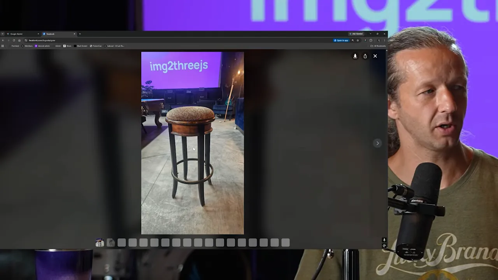
이 사진을 바로 넣지 않고 먼저 Gemini에 붙여 넣어, 흰 배경 위에 의자만 남기게 했어요. 아래가 그 결과예요. 배경과 바닥이 사라지고 의자만 남았어요.
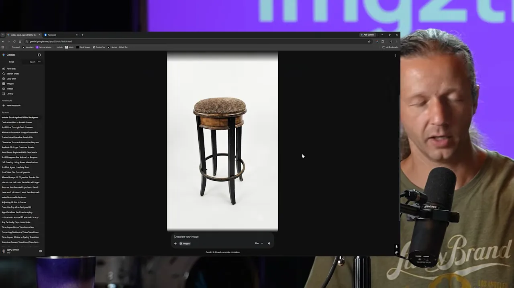
그다음 에이전트에 요청을 넣었어요. 아래 입력창의 문장이에요. "스튜디오 의자 사진이야. img2threejs로 돌리고, 결과가 축을 기준으로 살짝 돌게 보여 줘. 별도 index.html 파일에 두고 줌과 오빗 컨트롤을 넣어 줘."
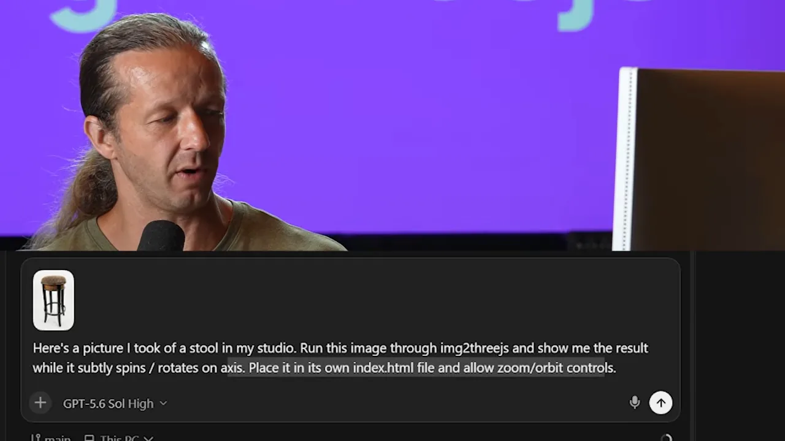
결과를 원본 옆에 놓고 비교한 화면이에요. 왼쪽이 배경을 지운 사진, 오른쪽이 만들어진 3D 모델 'Revolving stool'이에요. 쿠션 위 무늬처럼 세세한 부분은 단순해졌지만, 다리 네 개와 발 받침 고리, 전체 비율은 거의 그대로예요. 발표자가 좋게 본 건 과정이에요. 처음 결과를 스스로 여러 번 다듬었고, 바닥에 있던 잡동사니도 알아서 지웠어요.
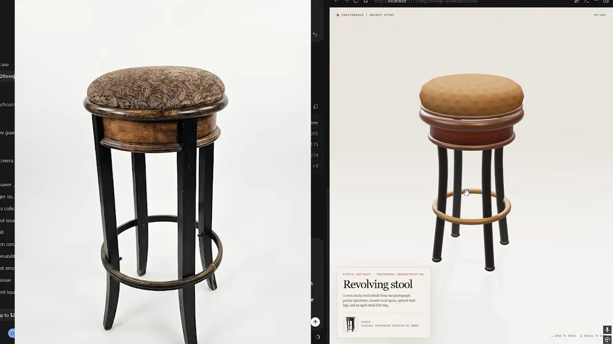
둘째 시험: MIDI 키보드와 후속 요청
두 번째는 훨씬 복잡한 물건이에요. Novation Launchkey 25 MIDI 키보드예요. 이번엔 직접 찍지 않고 Google 이미지 검색으로 참고 사진을 찾았어요. 아래 화면처럼 검색 결과에서 위에서 본 사진과 비스듬히 본 사진, 두 장을 골랐어요. 여러 방향을 보여 주면 모양을 더 잘 잡을 거라는 생각이에요.
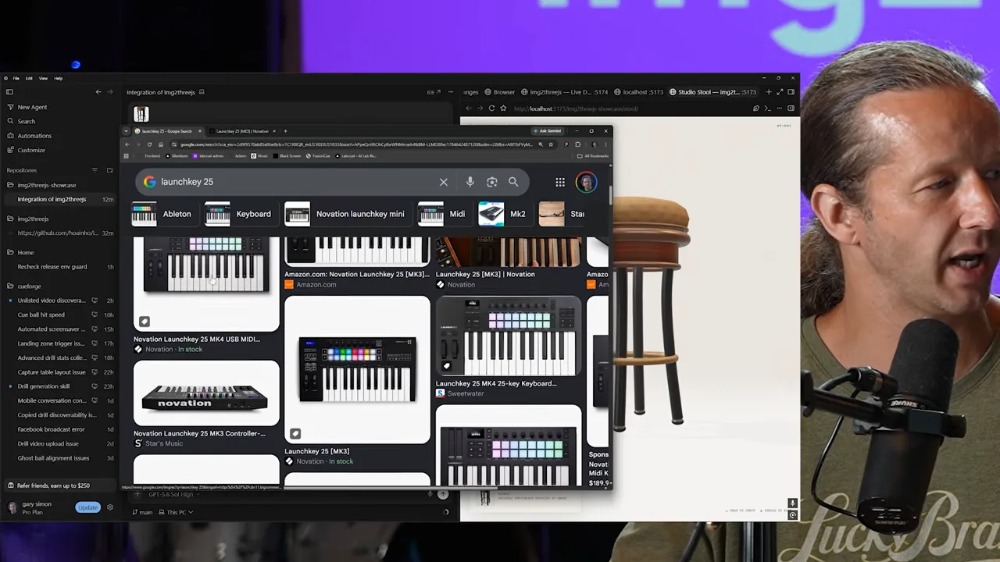
요청도 길어졌어요. 아래 입력창 위에 참고 사진 두 장이 붙어 있고, 문장은 이 순서예요.
- 사진에 보이는 Novation Launchkey 25의 3D 모델을 만들고, 오빗 컨트롤과 줌·팬을 넣어요.
- 건반을 클릭하면 MIDI 음이 나게 하고, 흰 건반과 검은 건반 모두 작동하게 해요. 다른 기능은 필요 없어요.
- 어두운 회색 배경에 색깔 있는 조명을 둬요.
- 건반을 누를 때마다 그 건반에 불을 켜고, 살짝 눌리는 애니메이션을 넣어요.
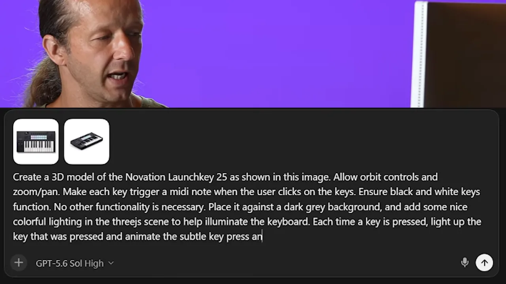
첫 결과의 문제 두 가지
첫 결과는 완벽하지 않았어요. 아래 화면에서 문제가 두 군데 보여요. 키보드 오른쪽 끝에 회색 버튼들이 몸체 밖으로 떠 있고, 위쪽 흰 패드 두 줄이 건반에 너무 붙어 있어요. 발표자는 패드 아래에 여백을 원했어요. 건반 누르기는 완벽했지만, 불은 검은 건반에만 들어오고 흰 건반에는 안 들어왔어요.
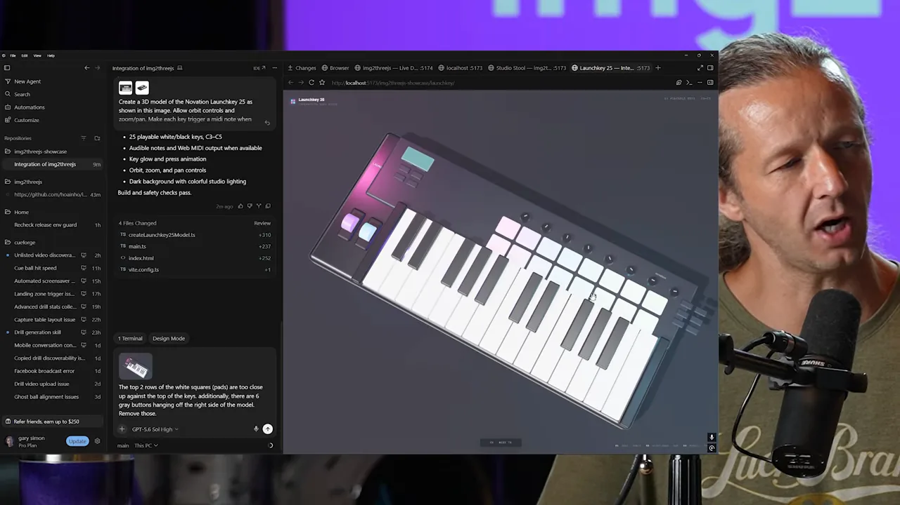
후속 요청 한 번으로 고치기
발표자는 문제가 잘 보이는 화면을 캡처해 붙이고 후속 요청을 보냈어요. 아래 입력창의 문장이에요. "위쪽 흰 사각형(패드) 두 줄이 건반 위에 너무 붙어 있어. 그리고 모델 오른쪽에 회색 버튼 여섯 개가 떠 있어. 지워 줘." 똑같이 재현할 필요는 없으니 버튼은 아예 없애도 된다고 판단했어요.
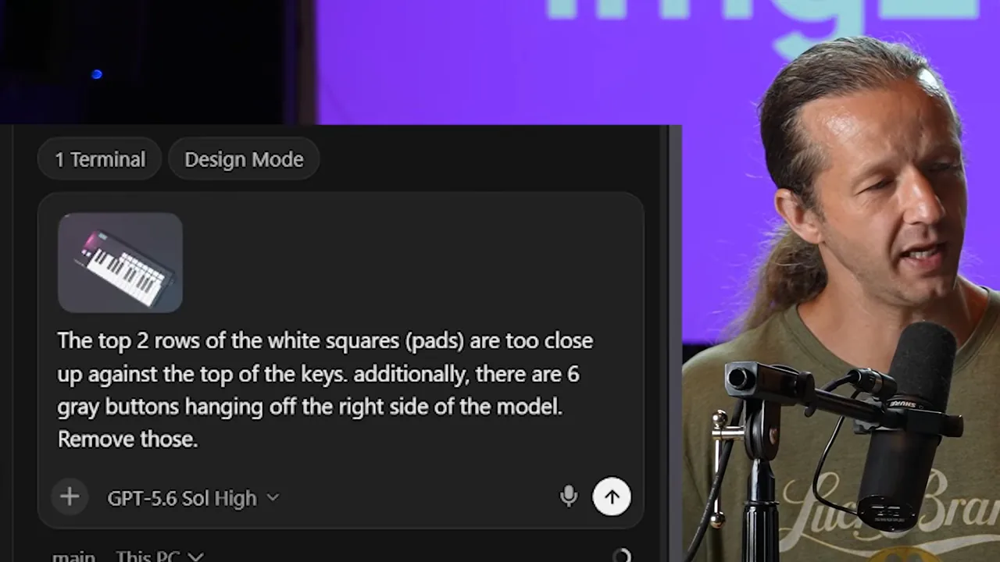
결과는 원하는 대로 나왔어요. 아래 화면처럼 패드 아래에 여백이 생겼고, 오른쪽에 떠 있던 버튼도 사라졌어요.
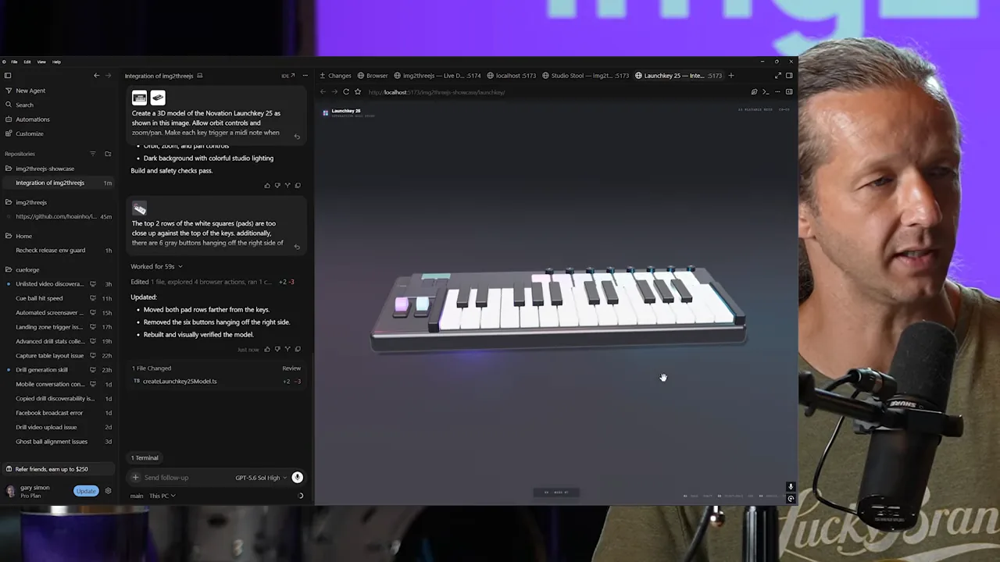
인트로 애니메이션까지 한 번에
마지막으로 인트로 애니메이션을 요청했어요. 페이지가 열리고 모델이 불러와지면, 건반들이 Y축 위에서 떨어지며 불투명도 0에서 1로 나타나 제자리에 앉게 해 달라는 거예요. 아래 화면 왼쪽이 에이전트가 정리한 작업 내용이에요. 건반이 높이 떠서 투명하게 시작하고, MIDI 음 순서대로 떨어지고, 떨어지는 동안 불투명도가 올라오고, 살짝 튀며 착지하고, 애니메이션이 끝나야 연주할 수 있어요.
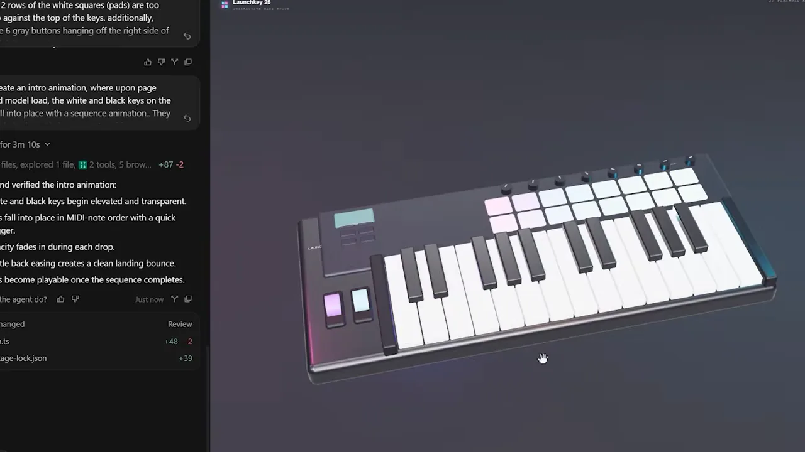
어디에 쓸 수 있을까
발표자의 결론은 이 방식이 꽤 쓸 만하다는 거예요. 재료는 세 가지로 구할 수 있어요. 의자처럼 실제 물건을 찍어도 되고, 키보드처럼 참고 이미지를 모아도 되고, OpenAI나 Midjourney 같은 AI 이미지 생성기로 그 자리에서 그림을 만들어도 돼요. 그걸 Three.js로 바꿔 웹페이지와 앱에 바로 쓸 수 있어요.
두 데모를 나란히 놓으면 차이가 잘 보여요.
| 스튜디오 의자 | Novation Launchkey 25 | |
|---|---|---|
| 재료 | 직접 찍은 사진 1장 | Google에서 찾은 참고 사진 2장 (위에서, 비스듬히) |
| 준비 | Gemini로 배경을 지움 | 따로 손대지 않음 |
| 요청 | 천천히 돌게, index.html, 줌·오빗 컨트롤 | 오빗·줌·팬, 건반마다 MIDI 음, 어두운 배경과 색 조명, 누른 건반 조명과 애니메이션 |
| 첫 결과 | 원본과 거의 같음 | 떠 있는 버튼, 너무 붙은 패드, 흰 건반 조명 안 됨 |
| 후속 요청 | 필요 없음 | 캡처와 함께 한 번 → 고쳐짐, 인트로 애니메이션 추가 |
영상의 두 데모가 거친 과정을 한 흐름으로 그리면 이래요.
flowchart LR A["물건 사진
(직접 촬영 · 참고 이미지 · AI 생성)"] --> B["배경 지우기
(의자 데모: Gemini)"] B --> C["코딩 에이전트 + img2threejs
모양과 동작을 한 번에 요청"] C --> D["Three.js 결과
index.html"] D --> E{"어긋난 곳이 있나요?"} E -- "있어요" --> F["캡처를 붙여 후속 요청"] F --> C E -- "없어요" --> G["애니메이션 등 기능 추가"]